Mushroom Snake — Mobile V5.3
Desktop Premium V5 locked. Mobile compositions + input/lifecycle only. Emulation is not physical approval.
LOCAL PRODUCT · pause journal · LIVE TEST · README · QA
Physical BEFORE references
Последнее задание описывает Android/Yandex screenshots, но новые файлы физических screenshots не приложены. Здесь нет выдуманных BEFORE-captures. Точная физическая причина D-pad → Pause остаётся неподтверждённой до журнала с телефона.
Программно воспроизведены unconditional nested blur и resize → transient fullscreen invalid → immediate gate. Обычный emulated pointerdown сам по себе не ставил паузу. BEFORE evidence.
Portrait Main / one physical Status Board
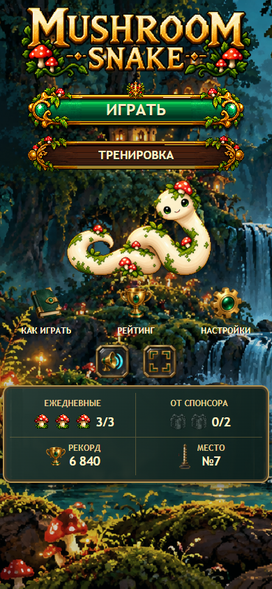
390×844 · 3/3 normal, 0/2 sponsor99 999 999 / №9999 · no horizontal overflowReal Sound / Game settings
 Sound only: Master / Music / SFX / mute. Mixer + device persistence.
Sound only: Master / Music / SFX / mute. Mixer + device persistence.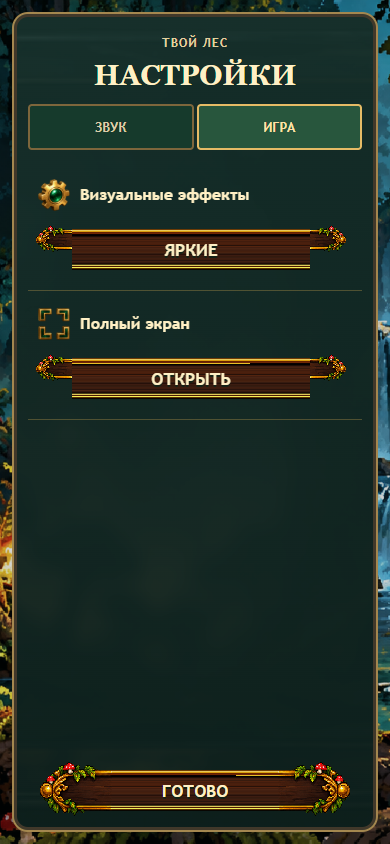
Game only: effects quality / fullscreen.Portrait Ranking

#1 full width · #2/#3 two columns · 4–10 scroll region · fixed own row/footer.
Single parchment mobile Guide
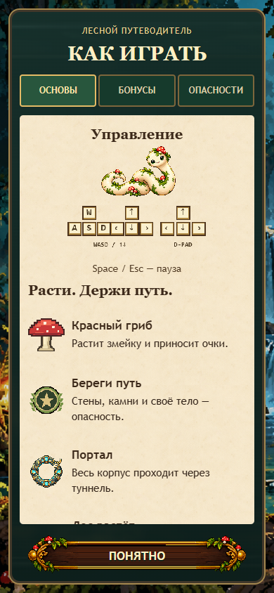
ОСНОВЫ · content scrolls, footer stays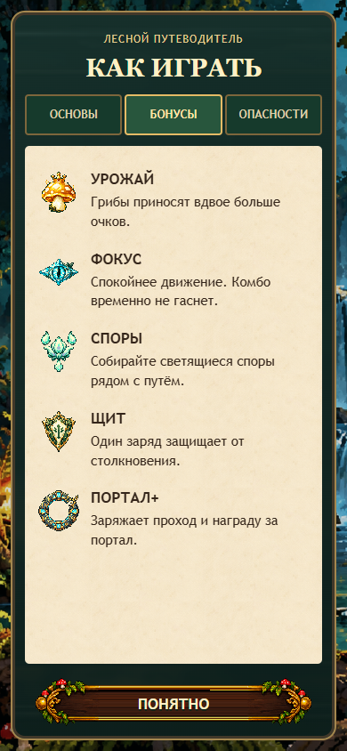
БОНУСЫ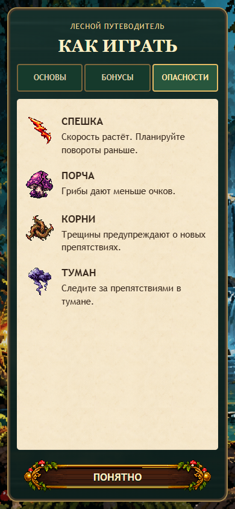
ОПАСНОСТИPortrait start gate
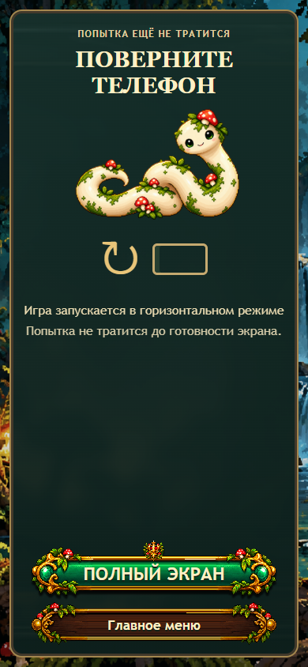
Fullscreen from user gesture → landscape lock where supported → actual landscape verified → only then ranked start. Cancel does not spend. Gameplay return requires explicit safe Resume.
Premium D-pad
Three native-scale concepts. Center diamond selected internally. Built-in ImageGen source; deterministic resize export only.
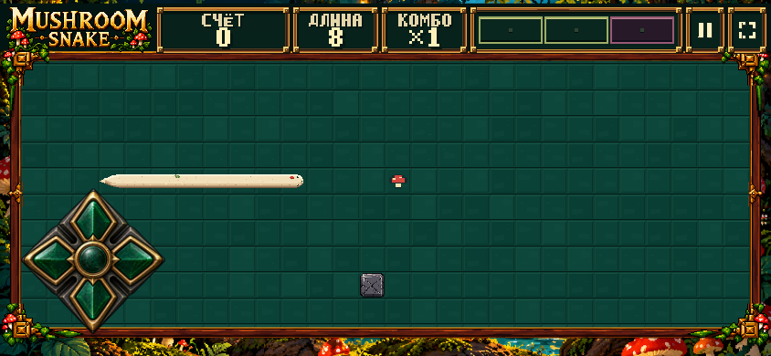
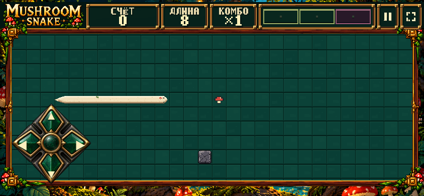
180px authored object, four independent64px hit regions, fixed12px+safe area.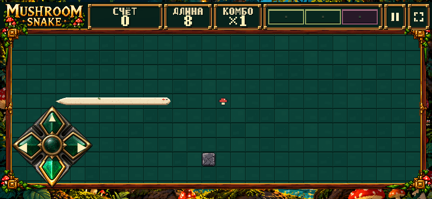
Immediate emerald illumination/depression. Pointerdown + capture; click isolated.Landscape Pause / Result
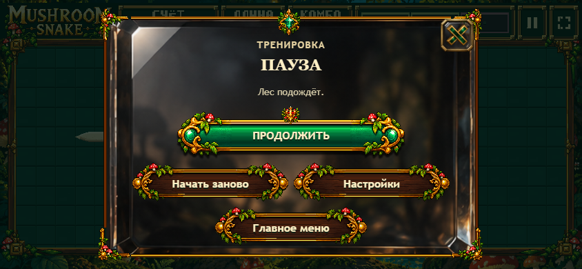
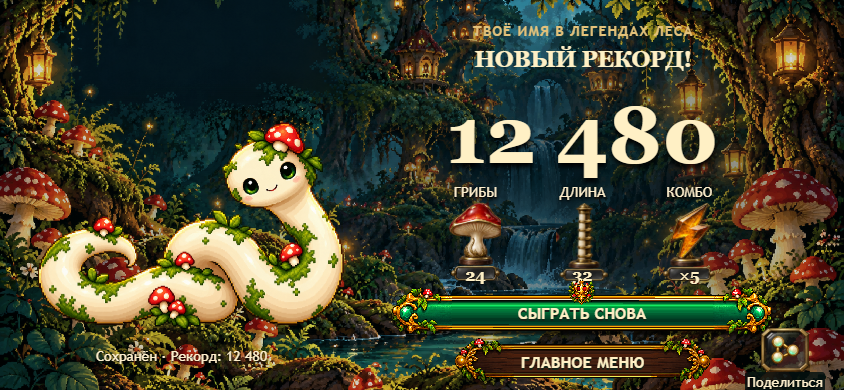
Settled local review fixtures. Existing approved art retained. 844×390,873×393,915×412,800×360 pass; no scroll, buttons≥44px.
Input + pause reason stress
1,800 real emulated taps · zero unexpected pauses/gates/fullscreen exits/scroll. 600canonical inputs each. Input burst holds clock intentionally; height/orientation tests use the live fixed timer. 21height changes preserve running state and12pxD-pad anchor. Replay pairs: cd39e890. Expected reasons only: orientation-portrait and explicit-pause-button.
Full pause/input report · Portrait metrics · Transient/persistent fullscreen + blur · Landscape geometry
Desktop regression
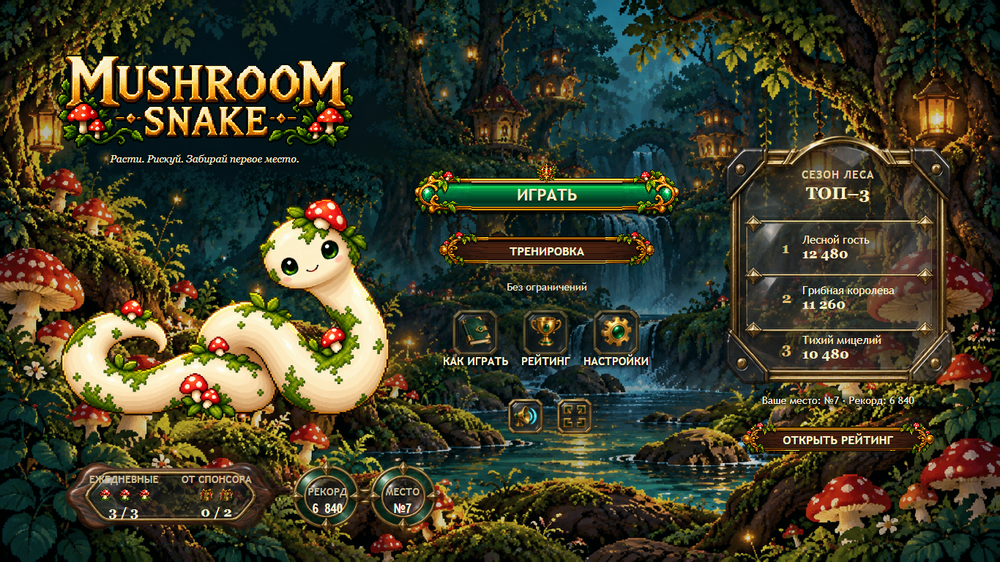
12states,9pixel-identical; others maximum1/255channel rounding in4–120pixels, no geometry/art changes. Strict byte differences retained, not hidden. Strict comparison · Raster gate.
Actual TEST host · local immutable candidate
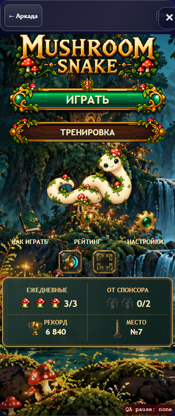
348×758 actual embedded product container; desktop is not squeezed into portrait. Anonymous host header has no invented player identity.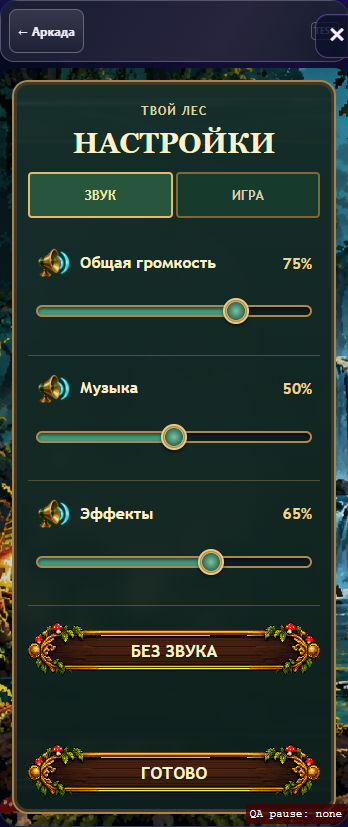
Dedicated Settings in actual embedded host.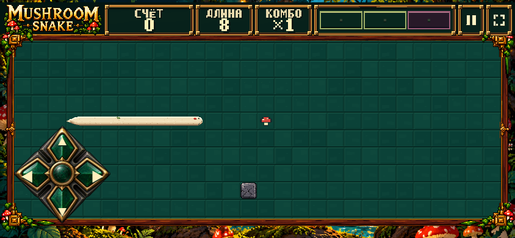
19targeted host checks. Files routed locally before publication; not mislabeled as LIVE evidence.
Final physical-phone gate
STOP FOR REAL ANDROID/YANDEX HUMAN REVIEW. Verify portrait Main/Settings/Ranking/Guide, fullscreen rotation, thumb input, toolbar changes, pause/resume and result. At?qa=1 any unexpected pause exposes its reason immediately.